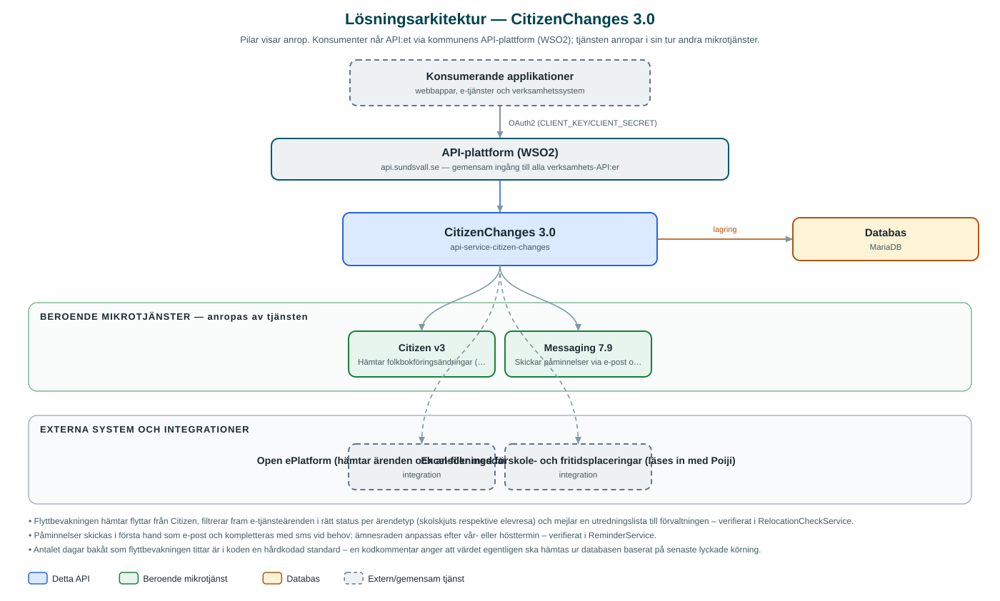

CitizenChanges
Batchtjänst som bevakar flyttar och skickar påminnelser kopplade till ansökningar om skolskjuts, elevresor och förskoleplats.
Om API:et
CitizenChanges hjälper skolförvaltningen att hålla beslut om skolskjuts och elevresor aktuella. Tjänsten kör batchjobb som jämför folkbokföringsändringar (flyttar) med pågående ansökningar i kommunens e-tjänsteplattform Open ePlatform, och sammanställer de ärenden som kan behöva utredas på nytt i en e-postrapport till handläggarna.
Inför terminsskiften kan tjänsten även skicka påminnelser till vårdnadshavare med beviljade ansökningar om att söka på nytt inför kommande läsår – i första hand via e-post och vid behov via sms, genom kommunens Messaging-tjänst.
Därtill finns en kontroll som jämför skolskjutsärenden mot en inläst Excel-fil med förskole- och fritidsplaceringar, för att fånga fall där placeringen påverkar rätten till skolskjuts. Batchjobben startas schemalagt eller manuellt via API:et.
Det här gör API:et
- Flyttbevakning – Hämtar registrerade flyttar från Citizen och korsar dem mot pågående skolskjuts- och elevreseärenden i Open ePlatform.
- Utredningsrapport till handläggare – Ärenden som berörs av en flytt sammanställs och skickas som e-postrapport till förvaltningen.
- Terminspåminnelser – Påminnelser till vårdnadshavare inför vår- respektive hösttermin om att förnya sina ansökningar, via e-post och sms.
- Förskolekontroll – Jämför skolskjutsärenden mot en inläst Excel-fil med förskole- och fritidsplaceringar.
- Manuell batchstart – Samtliga batchjobb kan startas via API:et, med möjlighet till testkörning utan att meddelanden skickas.
API-dokumentation
API:ets samtliga resurser, parametrar och datamodeller finns beskrivna i en OpenAPI-specifikation som är hämtad ur källkodsförrådet. Den kan utforskas interaktivt i Swagger UI eller laddas ner som YAML.
Teknisk dokumentation
Nedan beskrivs hur tjänsten är uppbyggd, vilka andra tjänster den anropar och vad som krävs för att driftsätta den. Informationen är härledd ur källkoden och dess konfiguration på GitHub.
Arkitektur

API:et är en mikrotjänst (Java 25, Spring Boot via kommunens gemensamma tjänsteplattform dept44 (8.0.8), byggd med Maven). Konsumenter når tjänsten via kommunens gemensamma API-plattform (WSO2) på api.sundsvall.se – tjänsten anropas aldrig direkt. Tjänsten anropar i sin tur andra mikrotjänster i kommunens tjänstelandskap. Lagring: MariaDB med Flyway-migrationer; används enbart för ShedLock-tabellen som låser de schemalagda jobben. Övriga integrationer som förekommer i koden: Open ePlatform (hämtar ärenden och ansökningsdata via Basic Auth), Excel-filer med förskole- och fritidsplaceringar (läses in med Poiji).
Teknikstack
- Språk: Java 25
- Ramverk: Spring Boot via kommunens gemensamma tjänsteplattform dept44 (8.0.8), byggd med Maven
- Databas: MariaDB med Flyway-migrationer; används enbart för ShedLock-tabellen som låser de schemalagda jobben
- Övrigt: Poiji för Excel-inläsning, ShedLock för schemalagda jobb, Logbook-filter som maskerar base64-innehåll i loggar
Beroenden till andra mikrotjänster
Tjänsten anropar följande mikrotjänster. Versionerna är hämtade ur källkodens integrationsklienter.
| Tjänst | Version | Användning |
|---|---|---|
| Citizen | v3 | Hämtar folkbokföringsändringar (flyttar) för invånare. |
| Messaging | 7.9 | Skickar påminnelser via e-post och sms samt rapporter till handläggare. |
Konfiguration och driftsättning
- application.yml med URL och OAuth2-klientuppgifter för Citizen och Messaging
- URL och Basic Auth-uppgifter (användarnamn/lösenord) för Open ePlatform
- Kommaseparerad lista av familyId som pekar ut vilka e-tjänster i Open ePlatform som bevakas
- Cron-uttryck för det schemalagda flyttbevakningsjobbet (ShedLock-låst)
- Anrop görs per kommun – municipalityId ingår i alla API-vägar
Noterbart ur källkoden
- Flyttbevakningen hämtar flyttar från Citizen, filtrerar fram e-tjänsteärenden i rätt status per ärendetyp (skolskjuts respektive elevresa) och mejlar en utredningslista till förvaltningen – verifierat i RelocationCheckService.
- Påminnelser skickas i första hand som e-post och kompletteras med sms vid behov; ämnesraden anpassas efter vår- eller hösttermin – verifierat i ReminderService.
- Antalet dagar bakåt som flyttbevakningen tittar är i koden en hårdkodad standard – en kodkommentar anger att värdet egentligen ska hämtas ur databasen baserat på senaste lyckade körning.
- Förskolekontrollen läser Excel-filer med Poiji och sparar en säkerhetskopia (lastRun.xls) av senaste inläsning – verifierat i DaycareCheckService och FileHandler.
- Integrationen mot Open ePlatform använder Basic Auth direkt mot plattformen, till skillnad från övriga beroenden som anropas med OAuth2-klientuppgifter.
Källkod
Källkoden är öppen och finns hos Sundsvalls kommun på GitHub. I källkodsförrådet finns även instruktioner för att klona, konfigurera och starta tjänsten i egen miljö.